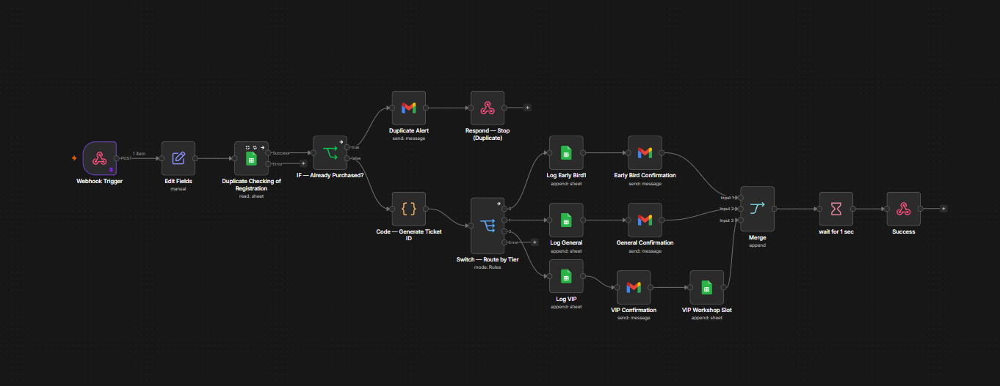

workflow design · 2026
Zero-Touch Attendee Pipeline 🔗
event registration automation scenario
Designed an end-to-end event registration workflow as a learning project: webhook trigger, duplicate detection, tier-based conditional routing (general / VIP / speaker), Google Sheets logging, and personalized Gmail confirmations.